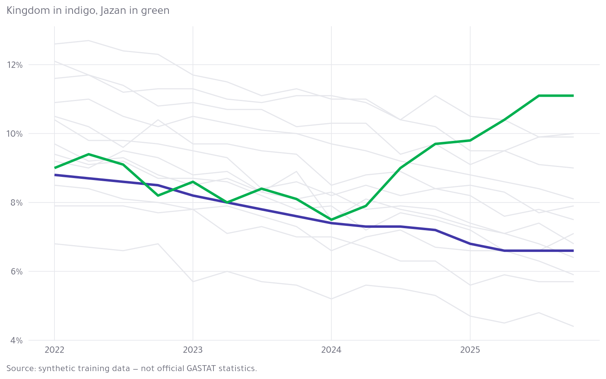
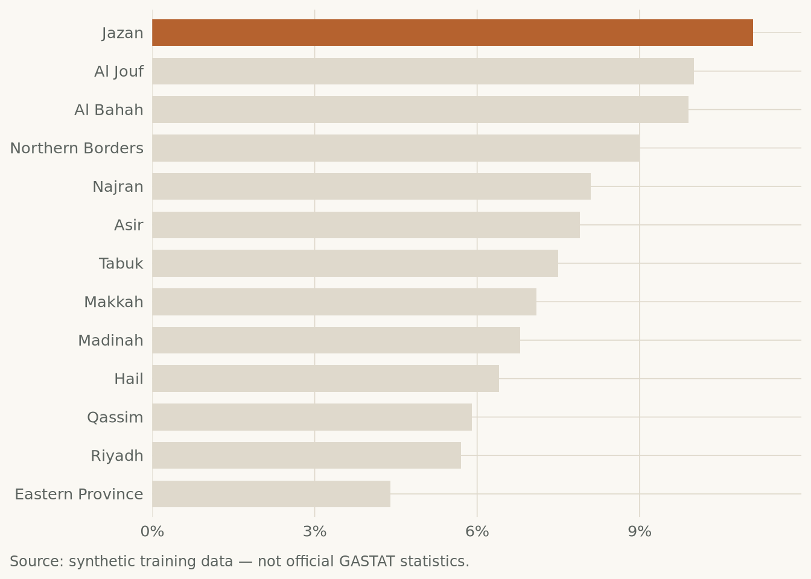

Kingdom
6.6%
Highest region
Jazan · 11.1%
Lowest region
Eastern Province · 4.4%


| Region | Rate (%) |
|---|---|
| Jazan | 11.1 |
| Al Jouf | 10.0 |
| Al Bahah | 9.9 |
| Northern Borders | 9.0 |
| Najran | 8.1 |
| Asir | 7.9 |
| Tabuk | 7.5 |
| Makkah | 7.1 |
| Madinah | 6.8 |
| Hail | 6.4 |
| Qassim | 5.9 |
| Riyadh | 5.7 |
| Eastern Province | 4.4 |
A dashboard answers questions you already know to ask: which region is highest, how has the Kingdom moved, where does mine sit. If the reader does not yet know what to ask, send them the bulletin instead — it makes the argument for them.
This file is self-contained. Email it; it opens. No server, no port, no deployment.
Source: synthetic training data — not official GASTAT statistics.